Reconhecida pelo Iphan em 2008
Serro
A primeira. Em 2002, o modo de fazer o queijo do Serro foi o primeiro bem imaterial registrado em Minas Gerais.

Conheça Minas
Queijos, cidades históricas, causos e muita prosa. A gente é de Minas e adora contar.
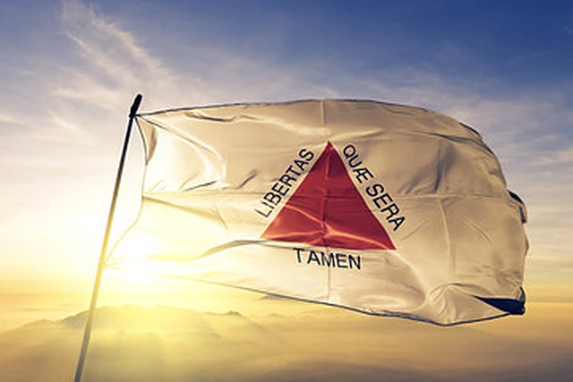
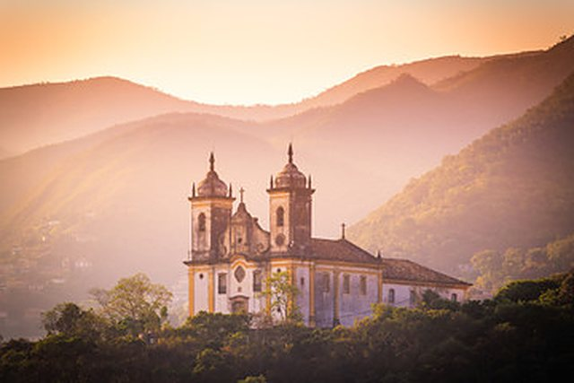
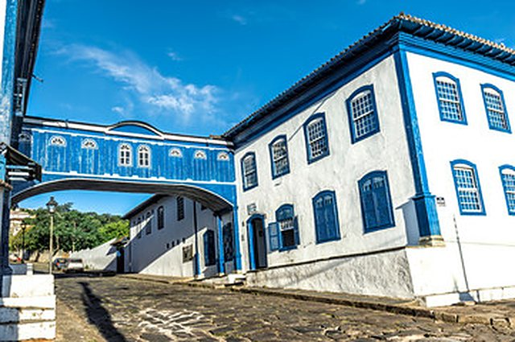
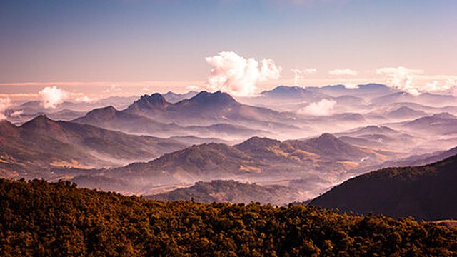
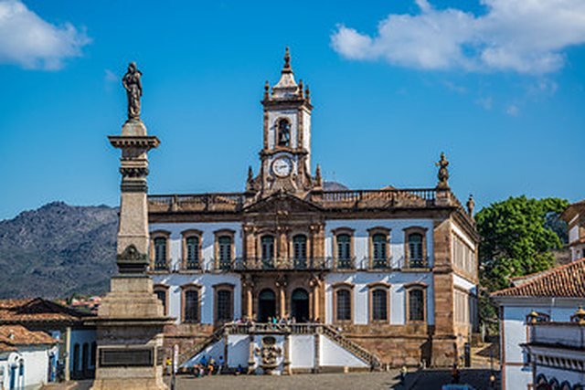
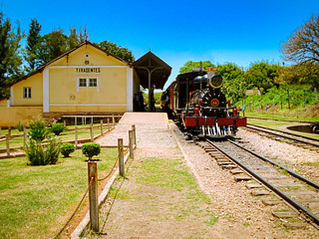
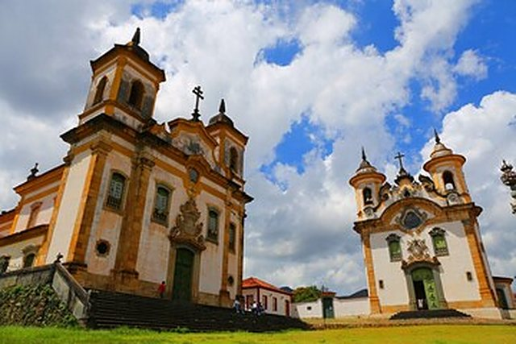
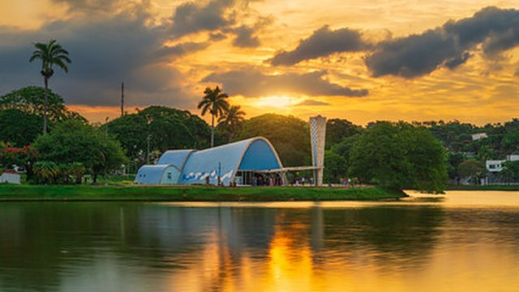
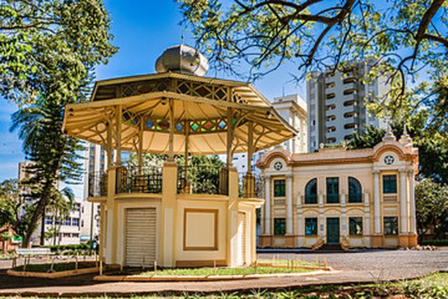
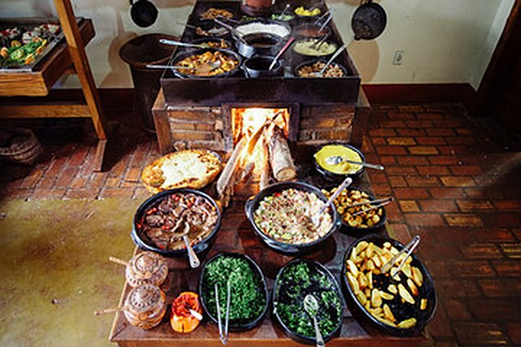
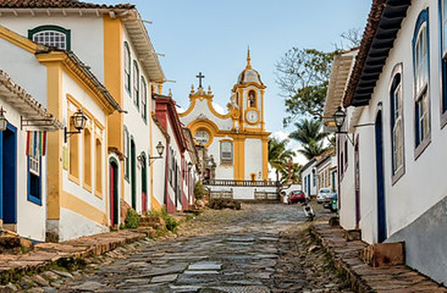
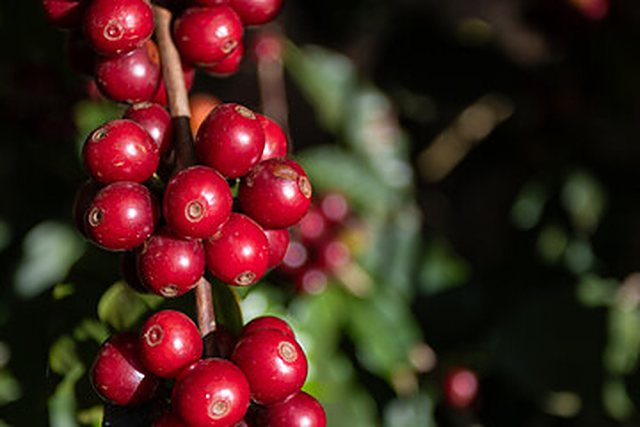
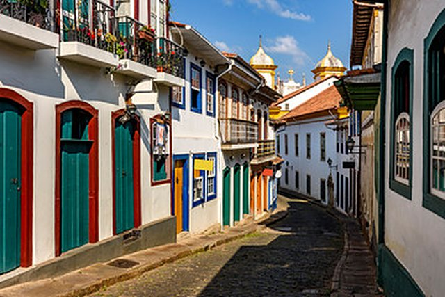
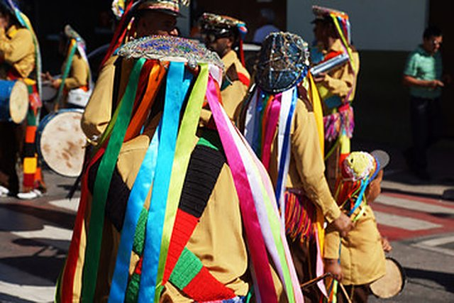
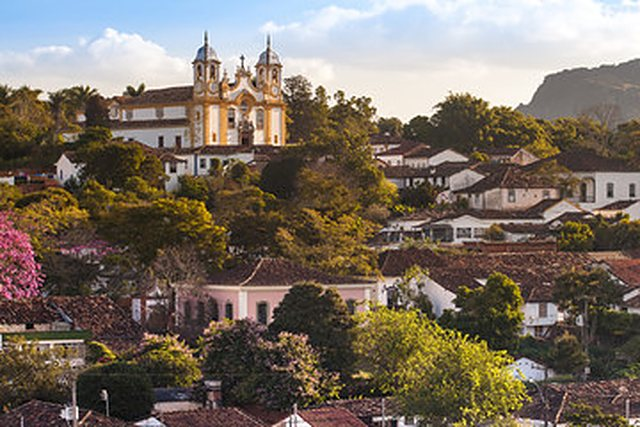
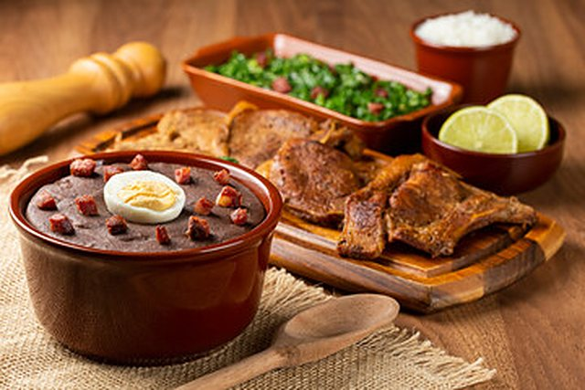
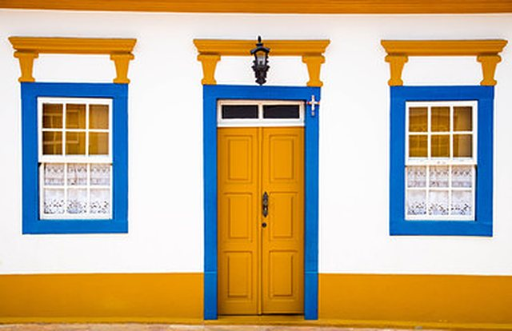
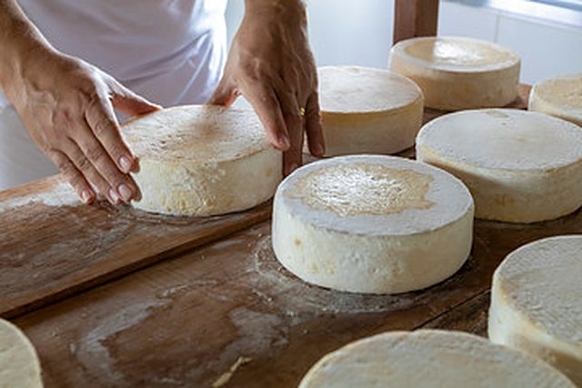
A história do pão de queijo
Ninguém sabe ao certo quem fez o primeiro. O que se conta é que ele nasceu nas fazendas de Minas, há mais de dois séculos, de um jeito bem mineiro: aproveitando o que havia.
Nas fazendas mineiras, o trigo era escasso e a farinha disponível nem sempre era boa. As cozinheiras passaram a usar o polvilho, derivado da mandioca, um alimento farto na região e herança da cozinha indígena. Foi a base de tudo.
O queijo que sobrava da produção diária, em geral peças já curadas e endurecidas, foi ralado e misturado à massa, com ovos, leite, gordura e sal. Era esse queijo que dava ao pãozinho o seu gosto marcante.
A receita passava de geração em geração e mudava de casa em casa. Era um quitute especial, servido em ocasiões importantes, e ficou por muito tempo restrito às cozinhas das fazendas mineiras.
O pão de queijo saiu das cozinhas rurais e ganhou as padarias e lanchonetes de Belo Horizonte e de outras cidades de Minas.
Com a industrialização da receita e a chegada dos produtos congelados, a massa pronta para assar em casa atravessou as fronteiras de Minas e conquistou o país, e hoje também aparece em supermercados de outros países.
O quitute virou símbolo de Minas e ganhou até data no calendário. E a tradição segue viva, em cada forno que acende com o cheirinho de queijo.
A origem exata do pão de queijo é incerta. Contamos aqui a versão que a tradição mineira e os pesquisadores da culinária mais repetem.

E o da De Minas? A gente leva essa história a sério: os pães de queijo que distribuímos respeitam a receita e a tradição, com muito queijo Minas artesanal. Veja o que tem dentro.
Rota dos queijos
O queijo é a alma do pão de queijo, e o jeito mineiro de fazer o Queijo Minas Artesanal já foi reconhecido pelo Brasil e pelo mundo.
Você sabia? O fermento natural do queijo mineiro, que passa de geração em geração nas fazendas, se chama pingo. É por isso que o nosso mascote tem esse nome.
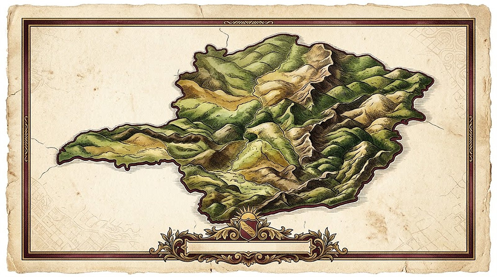
Mapa ilustrado, sem escala: as regiões produtoras estão listadas abaixo, com os dados do Governo de Minas.
Hoje o Governo de Minas reconhece 16 regiões produtoras de queijos artesanais. Dez delas fazem o Queijo Minas Artesanal, o mais antigo e tradicional do estado, feito com leite cru, pingo e salga seca.
A primeira. Em 2002, o modo de fazer o queijo do Serro foi o primeiro bem imaterial registrado em Minas Gerais.
Ao pé do Parque Nacional da Serra da Canastra, em São Roque de Minas, onde nasce o Rio São Francisco.
Ver queijo da CanastraUma das três regiões que, em 2008, tiveram o modo de fazer reconhecido como Patrimônio Cultural do Brasil.
Ver queijo do SalitreTerra de águas termais e do Grande Hotel de Araxá, uma região de tradição leiteira.
Ver queijo de AraxáOs queijos do Cerrado Mineiro, feitos em fazendas familiares de clima seco e pastagens abertas.
No oeste do estado, entre os rios Grande e Paranaíba, com Uberaba e Uberlândia como cidades-polo.
A região de Tiradentes e São João del-Rei, onde o queijo se mistura à história colonial.
Da terra dos diamantes e de Juscelino Kubitschek, na Serra do Espinhaço.
Queijos de altitude, feitos nas serras que cercam o Parque Estadual do Ibitipoca.
Entre a Serra da Piedade e a Serra do Caraça, perto de Belo Horizonte.
Outras seis regiões fazem queijos artesanais que não são o QMA, cada um com receita e nome próprios.
No Sul de Minas, na região da Mantiqueira, o município de Alagoa tem o seu próprio queijo: o Queijo Artesanal de Alagoa.
A região da Serra da Mantiqueira, com o Queijo Artesanal Mantiqueira de Minas.
No Norte de Minas, uma região com produção familiar de queijo artesanal, ainda em estudo quanto ao modo de fazer.
Terra do queijo Cabacinha, moldado à mão em forma de pequena cabaça. É feito com leite cru, e a massa é aquecida, sem chegar a pasteurizar.
Região do Requeijão Moreno, reconhecido como produto artesanal de Minas.
Ver o Requeijão MorenoUma região de sete municípios, com o seu próprio queijo artesanal.
Doces de Minas
Minas produz mais da metade do doce de leite do Brasil, segundo dados do Serviço de Inspeção Federal. E tem doce de tacho que já virou patrimônio.
Eleita a Capital Estadual do Doce de Leite em 2023. O famoso doce de leite de Viçosa é feito no Laticínio Escola da Funarbe, ligado à Universidade Federal de Viçosa, e é reconhecido em concursos nacionais de lácteos.
Ver doces de leiteDistrito de Ouro Preto conhecido como o “doce pedaço de Ouro Preto”. A tradição dos doces artesanais, com a goiabada cascão à frente, é patrimônio imaterial de Ouro Preto desde 2008, e todo ano tem a Festa da Goiaba.
Ver goiabadasFamosa pela goiabada cascão, que a prefeitura informa ter sido reconhecida como patrimônio imaterial do município em 2016.
Ver goiabadasAlém de terra de queijos e de águas termais, é um dos polos doceiros do estado, ao lado de Ponte Nova e de São Bartolomeu.
Cidades históricas
Sete paradas para conhecer a Minas do ouro e dos diamantes, onde cada esquina tem uma história para contar.
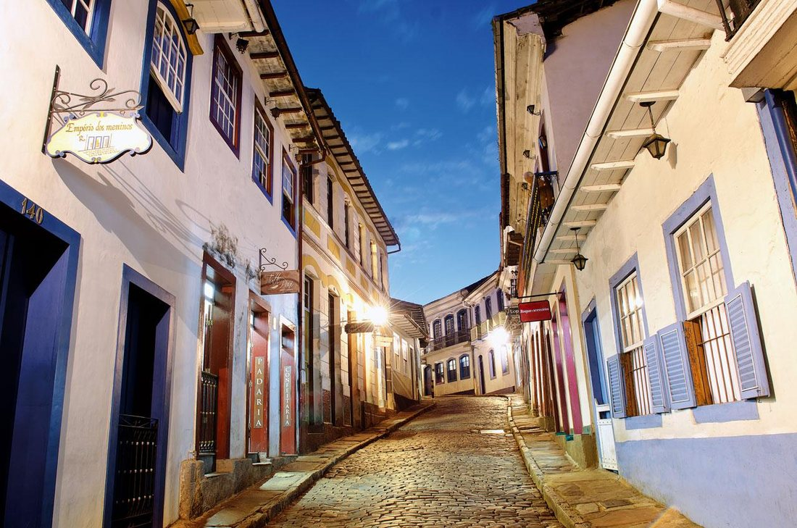
Primeiro sítio brasileiro a entrar na lista do Patrimônio Mundial da Unesco, em 1980. Ladeiras de pedra, casarões, o Museu da Inconfidência e a Igreja de São Francisco de Assis, projeto de Aleijadinho.
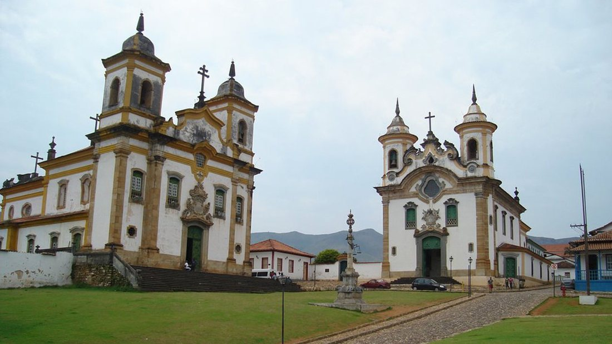
A primeira vila, a primeira cidade e a primeira capital de Minas. Na Praça Minas Gerais, duas igrejas se olham de frente: a de São Francisco de Assis e a de Nossa Senhora do Carmo.
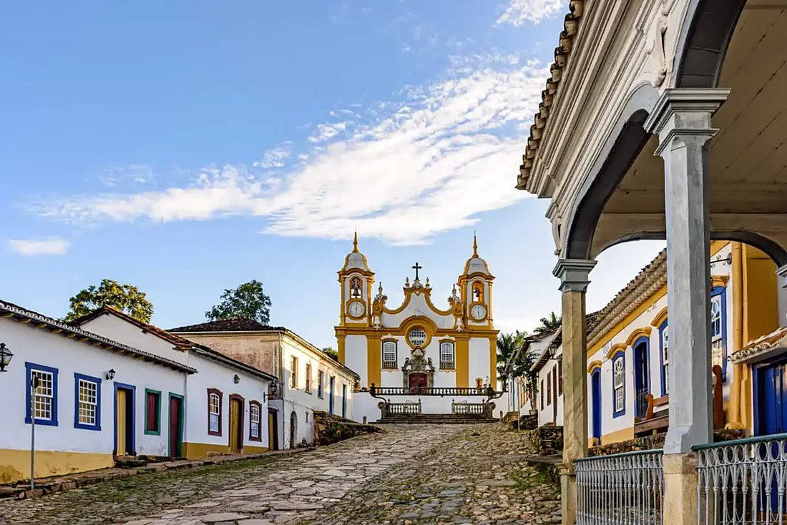
Ruas de pedra, casarões coloridos, a Igreja Matriz de Santo Antônio e uma das melhores gastronomias mineiras. Um charme só.
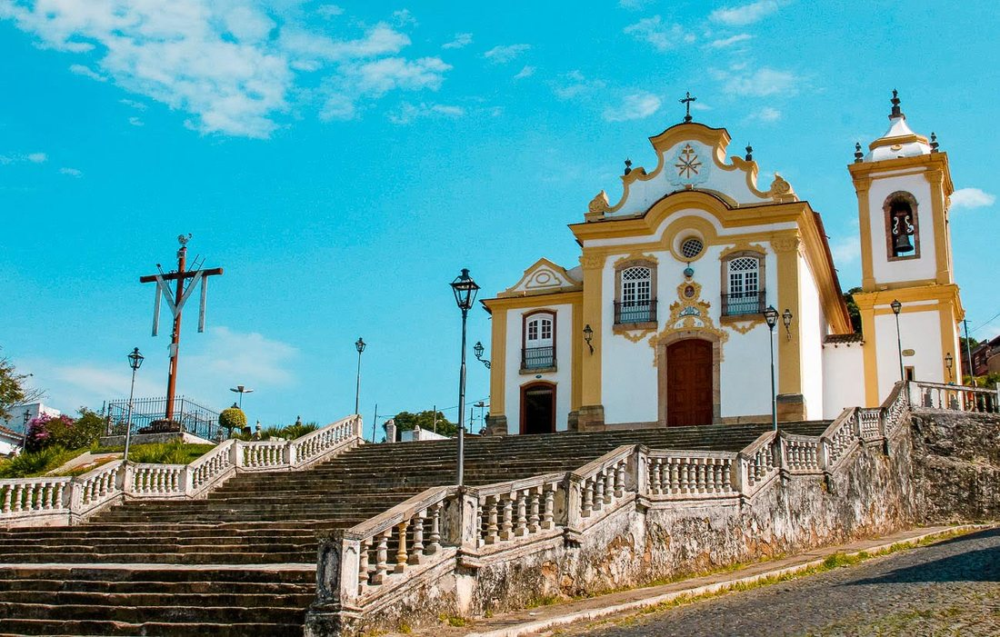
Casario colonial e uma Maria Fumaça que liga a cidade a Tiradentes, em um passeio de trem que é a cara de Minas.
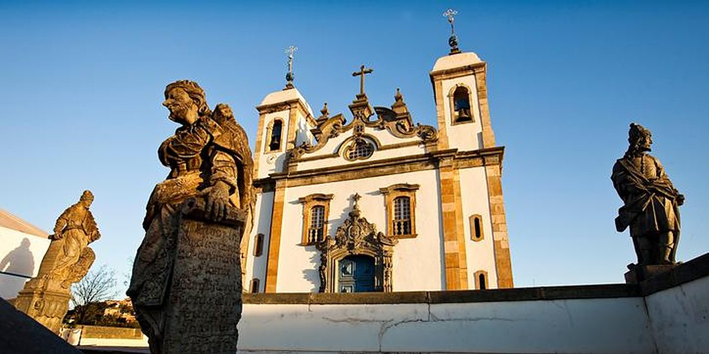
Casa o Santuário do Bom Jesus de Matosinhos, Patrimônio Mundial, com os doze Profetas esculpidos por Aleijadinho em pedra-sabão.
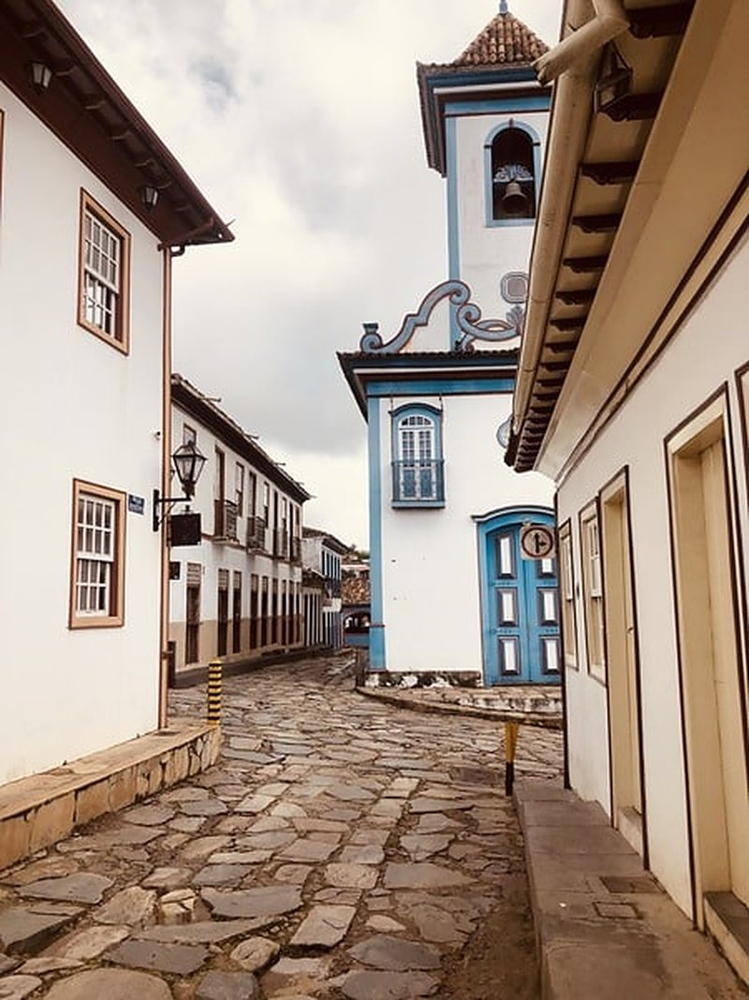
Patrimônio Mundial desde 1999, terra de Chica da Silva e de JK. Tem a Vesperata, concerto ao ar livre com músicos nas sacadas dos casarões.
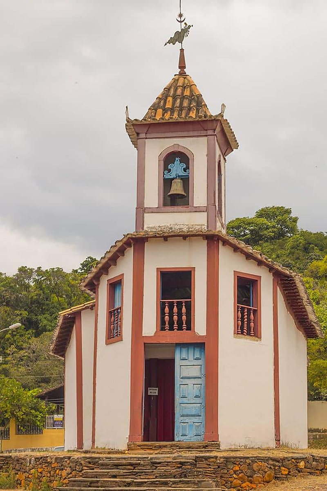
Pertinho de Belo Horizonte, guarda a pequena e detalhada Capela de Nossa Senhora do Ó e a Casa da Ópera. É também a terra do ora-pro-nóbis.
Mineiros que fizeram história
Uma homenagem a quem nasceu ou viveu em Minas Gerais e deixou a sua marca na história, na arte, na ciência, na política e no esporte. Esta lista é só o começo.
Joaquim José da Silva Xavier foi o mais conhecido líder da Inconfidência Mineira, movimento contra os impostos excessivos cobrados pela Coroa portuguesa. Em 21 de abril, o Brasil lembra o seu nome em feriado nacional.
Francisca da Silva de Oliveira, escravizada que se tornou uma das mulheres mais conhecidas e influentes do Arraial do Tijuco, hoje Diamantina, no século XVIII. A sua vida inspirou livros, filmes e novelas.
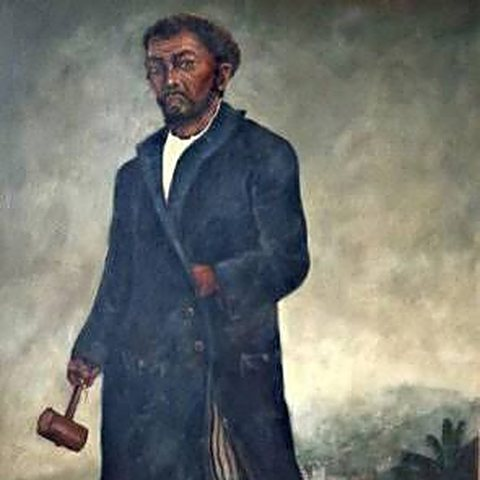
Antônio Francisco Lisboa, mestre do barroco mineiro, escultor e arquiteto. Suas obras marcam Ouro Preto e Congonhas, onde estão os doze Profetas em pedra-sabão.
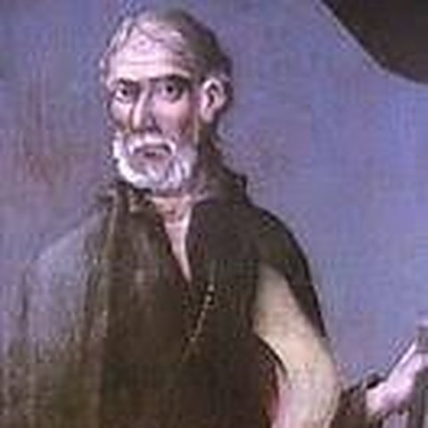
Manuel da Costa Ataíde, de Mariana, foi um dos grandes pintores do barroco mineiro e decorou igrejas de várias cidades históricas de Minas.
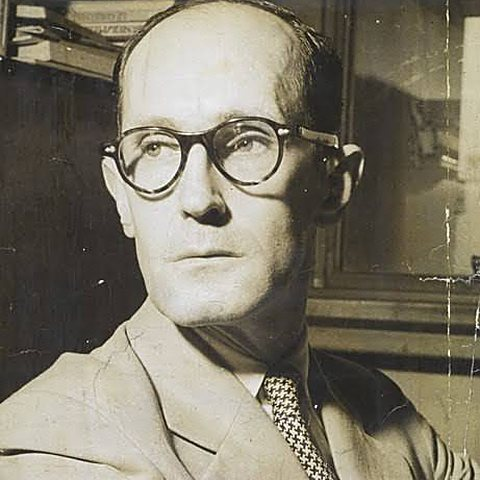
Nascido em Itabira, é um dos maiores poetas da língua portuguesa.
De Cordisburgo, escreveu Grande Sertão: Veredas e deu à literatura brasileira a sua prosa de sertão e de Minas. É dele a frase que a gente adora: “É junto dos bão que a gente fica mió.”
Poeta e escritora de Divinópolis, que fez da vida simples e do cotidiano de Minas matéria de poesia.
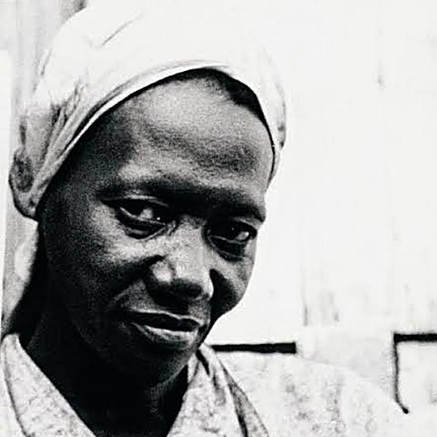
Nascida em Sacramento, escreveu Quarto de Despejo, lançado em 1960, um diário que revelou ao Brasil a vida na favela e se tornou um clássico.
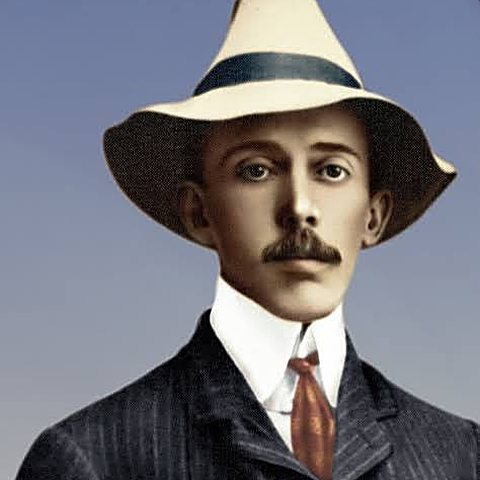
Alberto Santos Dumont nasceu em Palmira, hoje cidade de Santos Dumont. É conhecido como o Pai da Aviação e criador do 14-Bis, que voou em Paris em 1906.
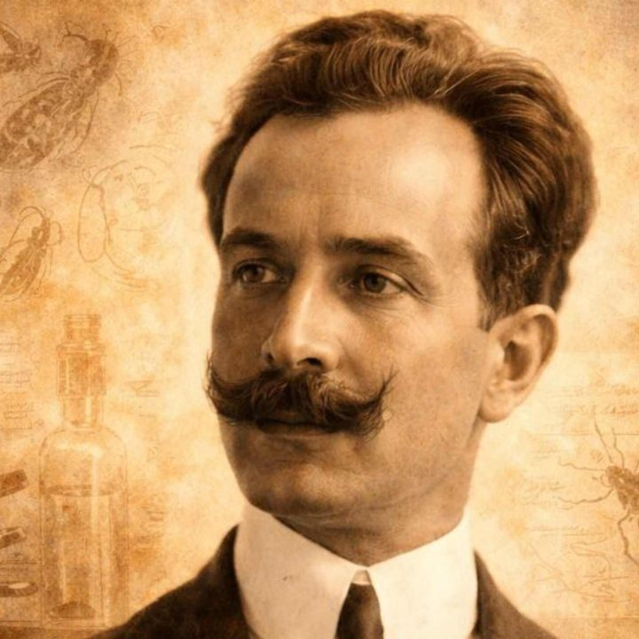
Médico e cientista de Oliveira, descobriu em 1909 a doença que ganhou o seu nome, a doença de Chagas.
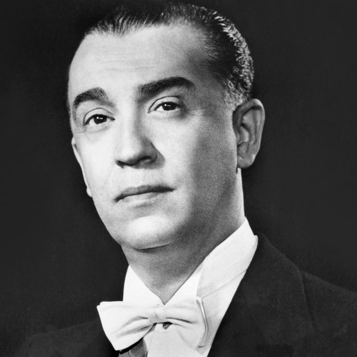
O JK, de Diamantina, foi presidente do Brasil de 1956 a 1961 e idealizador da construção de Brasília.
De São João del-Rei, foi eleito presidente da República em 1985, no fim da ditadura, mas morreu antes de tomar posse.
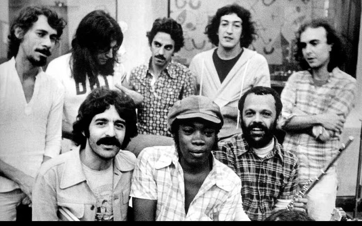
Movimento musical nascido em Belo Horizonte no fim dos anos 1960, com Milton Nascimento, Lô Borges, Márcio Borges, Fernando Brant, Beto Guedes e outros. O álbum duplo de 1972 virou marco da MPB.
Cantora mineira e um dos maiores ícones do samba e da música popular brasileira.
Nascido em Pedro Leopoldo e morador de Uberaba, foi o médium e filantropo mais conhecido do Brasil, com vasta obra psicografada.
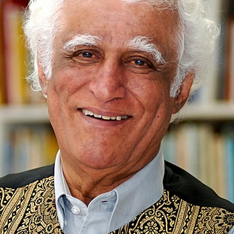
Cartunista, jornalista e escritor de Caratinga, criou o Menino Maluquinho.
Edson Arantes do Nascimento, de Três Corações, foi tricampeão mundial de futebol, em 1958, 1962 e 1970, e é considerado um dos maiores jogadores de todos os tempos.
Homenagem cultural. A De Minas não tem vínculo com as pessoas homenageadas nem com os seus herdeiros. Imagens ilustrativas.
Causos de Minas
Histórias da tradição oral mineira, contadas nas varandas, nas cozinhas e nos botecos. Cada um conta de um jeito.
Um mineirinho ia ser fuzilado e o comandante perguntou qual era a sua última vontade. “Uma jaca”, respondeu. “Mas não é época de jaca!”, avisou o oficial. E o mineirinho, na calma de sempre: “Pode deixar, uai, eu espero.”
Em Minas, ir embora no horário combinado é missão quase impossível. O anfitrião solta a sentença: “Vai não, sô, tá cedo!” E a despedida vira mais duas horas de prosa, com café passado na hora.
Um mineiro pediu a um canoeiro que o levasse para pescar em alto-mar. A ida era de graça; a volta, 500 reais. Olhando aquela água toda, ele concluiu: “Agora entendi por que Jesus andou sobre as águas: a volta devia custar uma fortuna!”
Dicionário do Pingo
Se você é de fora, vai se acostumar rapidinho. O Pingo explica.
“Uai, uai é uai, uai!”
Dica do Pingo: quando você não souber o que dizer, diga “uai”. Em Minas, sempre funciona.
O oeste de Minas tem vocabulário próprio, com influência de Goiás e de São Paulo.
Expressões populares, reunidas de dicionários de mineirês e de falantes da região.
Leve Minas para casa
Pão de queijo quentinho, queijos, doces e tudo o que a gente trouxe de Minas, com entrega na Vila Carrão e região.